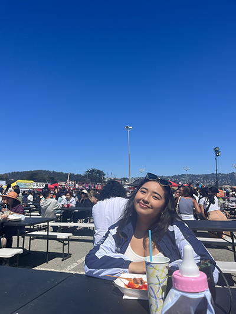

Hi! I'm Emely Cortez Figueroa
I am an illustrator, designer and social media marketer based in San Francisco.
Growing up in the Mission District in San Francisco, I have been surrounded by murals and graffiti since a young age, which has inspired me to pursue a creative career. Hoping to break barriers as a first-generation college student, I am following my passion of art mixed with the analytic beauty of marketing makes me a well-rounded marketer.
Experience
Graphic Designer, USF Dons Athletics
June 2023 - Present
- Creating social media posts, email banners, and posters, through Adobe Photoshop, Illustrator, and InDesign to enhance branding efforts.
- Assisting during media day for student-athletes to ensure photographs are captured for promotional posters and assets.
- Assisting the Assistant Athletics Director for Marketing, Sales & Fan Engagement, to enhance the branding strength of USF Dons Athletics.
- Attend weekly meetings to brainstorm ways to increase turnout and sponsors at USF sporting events.
Vice President of Marketing, USF SOM Honors Program
January 2022 - Present
- Growing the engagement rate by 14% and follower count by 31% for the USF SOM Honors Program on Instagram and LinkedIn.
- Hosting bi-weekly marketing meetings to ensure the team is meeting our marketing goals, as well as plan ahead for the following month’s action plan.
- Compiling information and creating a monthly newsletter using Canva and MailChimp.
- Tracking and analyzing specific KPIs, such as reach, engagement, and impressions, for Instagram and LinkedIn posts through an Excel and Meta Business Suite.
Social Media Assistant, USF Career Services Center
August 2022 - June 2023
- Grew the engagement rate by 24% and impressions by 64.88% on the @usfcareer Instagram page.
- Created a new marketing strategy focusing on 4 pillars to drive engagement, reach, and relatability to USF students.
- Managed a content calendar through Google Calendar to ensure a consistent publishing schedule.
- Managed a content calendar through Google Calendar to ensure a consistent publishing schedule.
- Collaborated with CSC Marketing Team to ensure needs were being met, and assisted with greater event set up for CSC-hosted events.
Education
University of San Francisco
B.S Business Administration, Major: Marketing, Minor: Design
May 2024 Graduate
- Dean’s Honor Roll: Fall 2020-Present
- Relevant Coursework: Honors Quantitative Business Analysis, Honors Principles of Marketing, Applied Business Technology, Digital Marketing, Marketing Research, Design Fundamentals, Visual Communication I, Entertainment Marketing, Honors Systems in Organizations